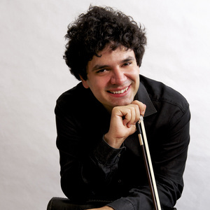

Iason Keramidis (Grecia)

A los 13 años continuó su formación musical con el Profesor Stelios Kafantaris.
Estudió en la Escuela Superior de Música de Stuttgart bajo la tutela del Maestro Ingolf Turbante.(2003)
Luego continúa sus estudios en la Hochschule für Musik Karlsruhe con el Maestro Ulf Hoelscher donde completa sus estudios (Diploma de Educación Artística) con distinción. (2009)
Iason Keramidis fue admitido en la clase solista de la Escuela Superior de Música de Karlsruhe.(2009)
Completa sus estudios de música de cámara con el Profesor Michael Uhde. (2013)
A través de numerosos conciertos en países como Alemania, EE.UU, China, Gran Bretaña, Eslovaquia, Francia, Bélgica, Italia, Rumania, Serbia, Rusia, Austria, Bulgaria, República Checa, Suiza, Portugal y Brasil, Iason está perfilado a convertirse en uno de los violinistas internacionales más buscados del momento.
Como solista actuó con la Orquesta Sinfónica de Sofía, la Orquesta Sinfónica del Estado de Salónica, la Filarmónica de Baden-Baden, la Orquesta Estatal de Atenas, la Orquesta Sinfónica de Olomouc y la Filarmónica del Estado Alemán.
Desde 1998 ha sido galardonado con numerosos premios, como ser: Primer premio en el Concurso Panhelénico en Atenas, el primer premio en la competencia por la ART violín en Salónica, el primer premio en el Festival Internacional de Música de Neustadt en la Ruta del Vino y el primer premio en el concurso de los Amigos de la Universidad de Música de Karlsruhe por Astris Trio.
Desde 2013 es miembro de los primeros violines de la Filarmónica de Munich.
Estudió en la Escuela Superior de Música de Stuttgart bajo la tutela del Maestro Ingolf Turbante.(2003)
Luego continúa sus estudios en la Hochschule für Musik Karlsruhe con el Maestro Ulf Hoelscher donde completa sus estudios (Diploma de Educación Artística) con distinción. (2009)
Iason Keramidis fue admitido en la clase solista de la Escuela Superior de Música de Karlsruhe.(2009)
Completa sus estudios de música de cámara con el Profesor Michael Uhde. (2013)
A través de numerosos conciertos en países como Alemania, EE.UU, China, Gran Bretaña, Eslovaquia, Francia, Bélgica, Italia, Rumania, Serbia, Rusia, Austria, Bulgaria, República Checa, Suiza, Portugal y Brasil, Iason está perfilado a convertirse en uno de los violinistas internacionales más buscados del momento.
Como solista actuó con la Orquesta Sinfónica de Sofía, la Orquesta Sinfónica del Estado de Salónica, la Filarmónica de Baden-Baden, la Orquesta Estatal de Atenas, la Orquesta Sinfónica de Olomouc y la Filarmónica del Estado Alemán.
Desde 1998 ha sido galardonado con numerosos premios, como ser: Primer premio en el Concurso Panhelénico en Atenas, el primer premio en la competencia por la ART violín en Salónica, el primer premio en el Festival Internacional de Música de Neustadt en la Ruta del Vino y el primer premio en el concurso de los Amigos de la Universidad de Música de Karlsruhe por Astris Trio.
Desde 2013 es miembro de los primeros violines de la Filarmónica de Munich.